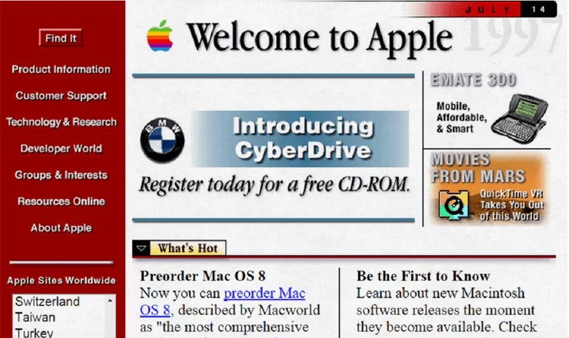

Web layout history: How we got to grid and flex
Source:vignettes/imola-why-flex-and-grid.Rmd
imola-why-flex-and-grid.RmdIntroduction
If you’re been around web development since the 90s, you might remember how different web design used to look.
Solutions were often not intuitive, over complicated, with hacky workarounds often considered best practices.
As the web evolved, so did the layout (and styling) options available, maturing and changing to make what used to be convoluted solutions into simpler and more straightforward approaches.
So how was life before CSS we know now came to be? How were page layouts setup? Why is grid and flexbox considered so much better than the previous solutions, and why are both currently used side by side instead of one over the other?
Join me for a trip though memory lane as we look into how web layouts evolved since the beginning of the web into the current solutions we now use.
The early days of HTML
The original proposals for HTML started in 1989, and lasted until about February 1997, the practical realization of HTML was about presentation on screens. This included published recommendations, browsers & development tools, and actual web sites.
At this point web developers where mostly focused on document sharing, so elements focused much more on document requirements such as headers, fonts and paragraphs. In 1993, some style sheet control of layout was proposed, but it would still take some time for it to become mainstream.
Around this time (as well as during the reign of tables for layout purposes) the HTML document structure dictated the page layout, and the though that you would need more that sequential content, was barely even considered.
Early HTML specs state that “The elements within the BODY element are in the order in which they should be presented to the reader”.

HTML Tables
In 1991 ViolaWWW grew into the most sophisticated of the early Web browsers. It is claimed to have been the first browser with support for style sheets, tables, and nest-able HTML elements. Followed in 1993 a proposal was made for “columns” in a presentation language for the web. This proposal did not directly turn into CSS. “The styles defined specify the recommended behavior of HTML objects in terms of: …. page layout … column ….”.
These were the initial works of tables in HTML, and finally in 1997, HTML 3.2 was finally released as a W3C Recommendation. It stated that tables “can be used to markup tabular material or for layout purposes”… And oh boy did people took it literally. Tables became the base for most web pages and considered the go to when structuring content. It was a wild time of invisible gifs used for spacing, convoluted markup and many more terrifying things.
<!-- html -->
<table>
<tr>
<td colspan="2">
<h1>header</h1>
</td>
</tr>
<tr>
<td>
<ul>
<li><a>Home</a></li>
<li><a>About</a></li>
<li><a>Contact</a></li>
</ul>
</td>
<td>
<h2>Title</h2>
<p>content</p>
</td>
</tr>
<tr>
<td colspan="2">
<p>footer</p>
</td>
</tr>
</table>
header |
|
Titlecontent |
|
|
footer |
|
Floats and the first layout frameworks
Eventually a new CSS property made its way to the top, float. The idea of float was simply, you have an element and need text to wrap around it, float that element and you get exactly that! Simple right? Well…
If you couple this with fixed size for each floated element, a large dose of space clearing techniques, and the CSS position property one could achieve A LOT. This was the conclusion that some clever developers reached in the early 2000’s, allowing multi-column layouts to be created and becoming the go to for these times. Eventually frameworks started gaining popularity that would hide these hacks behind a css classes and HTML structures, making life even easier. Bootstrap 3 is a great example of such framework that, even now, can be found in millions of websites (even though its newest iteration, bootstrap 4, no longer uses this approach and instead relies on flexbox for its layout system).
<!-- html -->
<header>Header</header>
<main>Main article</main>
<aside>List of links and news</aside>
<footer>Copyright information</footer>/* css */
main {
float: left;
width: 60%;
margin: 0 5%;
}
aside {
width: 25%;
margin-left: 70%;
}
footer {
clear: left;
}CSS Flex (flexbox)
The introduction of the display: flex; property around 2012 was a real step forward, solving many existing layout problems and making web developers and designers generally quite happy.
This was the true first CSS property to be 100% developed to be focused on layouts, making its way into modern web development quite fast.
It is specially powerful for page layouts that can defined primarily in terms of either columns or rows. for instance, if we want to align a few elements in a single row, display: flex; provide us with a modern and easy way to do so.
Not only that, flex has built in control of other properties such as alignment and visual order of the elements without having to change the HTML markup directly. As HTML becomes more and more semantic based, specially with the release of HTML 5, this becomes even more important since it allows us to fully decouple the presentation layer from the content.
<!-- html -->
<header>Header</header>
<div id="main">
<article>Article</article>
<nav>Nav</nav>
<aside>Aside</aside>
</div>
<footer>Footer</footer>/* css */
#main {
display: flex;
}
#main > nav,
#main > aside {
flex: 0 0 20%;
}
#main > article {
flex: 1;
order: 1;
}
#main > nav {
order: 3;
}
#main > aside {
order: 2;
}CSS Grid
At this moment in time display: grid; is the only CSS property intended for building flexible responsive grid layouts. This sort of layout requires a layout area which can be manipulated in two dimensions – both horizontally and vertically – and this is exactly what CSS Grid does.
While display: flex; gives you full control over either columns or rows, Grid goes one step forward and can handle both rows and columns, meaning that it will always align items to the horizontal and vertical tracks you have set up. Grid is mostly defined on the container, not the children as it is with flexbox.
<!-- html -->
<div class="page-wrap">
<header class="page-header">
Header
</header>
<nav class="page-nav">
Nav
</nav>
<main class="page-main">
<article>
<p>Article</p>
</article>
</main>
<aside class="page-sidebar">
Aside
</aside>
<footer class="page-footer">
Footer
</footer>
</div>/* css */
.page-wrap {
display: grid;
grid-template-columns: minmax(10px, 1fr) minmax(10px, 3fr);
grid-template-rows: min-content min-content 1fr min-content;
}
.page-header {
grid-column: 1/-1;
}
.page-sidebar {
grid-column: 1/2;
grid-row: 2/4;
}
.page-nav {
grid-column: 2/3;
}
.page-main {
grid-column: 2/3;
}
.page-footer {
grid-column: 1/-1;
}Article
New is always better… Right?
So Grid wins!
Well, No.
Flexbox and Grid serve different purposes and are both incredibly useful. Sometimes flex is the best solution, sometimes grid makes it simpler, sometimes any of them works.
Flex and Grid also work very well together, you can easily put a Flex element within a Grid element and vice versa. The important thing to decide in each case is which layout system is best suited for your case.
When it comes to which approach to use, there are some general rules to make life easier:
Use Flex when:
- Content is priority
- Need horizontal or vertical alignment
- Layout is one-dimensional
- Need better older browser support
Use Grid when:
- Things need a set width regardless of content
- Need two-dimensional layout (items in one row or column need to align with the item in the previous row or column)
- Elements need to overlap
A common rule of thumb here is to use Grid for full page layouts and Flex for everything else, or to consider whether the component you plan to build is one-dimensional (Flex) or two-dimensional (Grid).
For a more in depth dive into Grid and Flex, make sure to check the vignettes for each for them:
-
vignette("imola-flexbox")for details on Flex. -
vignette("imola-grid")for details on Grid.